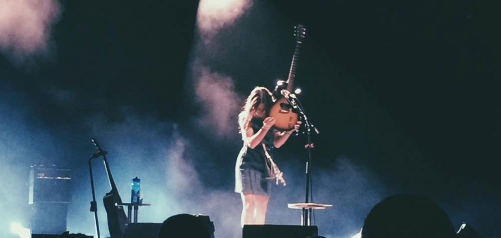
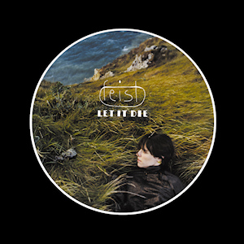
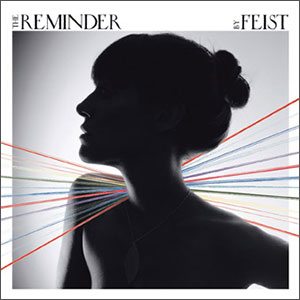
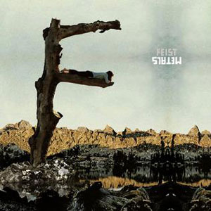
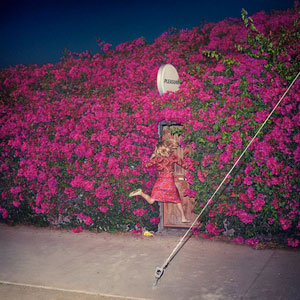

Leslie Feist (born February 13, 1976 in Amherst, Nova Scotia, Canada) is a Juno Award-winning and Grammy-nominated Canadian singer-songwriter. She performs as a solo artist under the name Feist and as a member of the indie rock supergroup Broken Social Scene. At the 2008 Juno Awards on April 6, 2008 in Calgary, Alberta, she was the top winner with five awards, including Songwriter, Artist, Pop Album, Album and Single of the Year.
In the summer of 2001, Feist self-produced seven songs at home which she called The Red Demos, which have never been released commercially. She spent more than two years touring throughout Europe with Gonzales. In that same year she and a group of old friends formed Toronto indie rock supergroup Broken Social Scene and subsequently recorded You Forgot It in People.
Let It Die
While on tour in Europe with Gonzales, they began recording new versions of her home recorded Red Demos, which would later become her major label debut Let It Die. Let It Die featured both original compositions and covers, and Feist has been noted both as a songwriter and as an innovative interpreter of other artists' songs.
After the recording of Let It Die, Feist moved to Paris. While in Europe, she collaborated with Norwegian duo Kings of Convenience as co-writer and guest vocalist on their album Riot on an Empty Street, as well as co-writing and singing as a duet "The Simple Story" with Jane Birkin on her album Rendezvous.
Feist toured during 2004, 2005 and 2006 through North America, Europe, Asia, and Australia supporting Let It Die. She won two Canadian Juno Awards for "Best New Artist" and "Best Alternative Rock Album" in 2004. Sales of Let It Die totaled 500,000 internationally, and she was awarded a platinum record in Canada, as well as a gold album in France.
The Reminder
Feist's third solo album, The Reminder, was released on April 23, 2007 in Europe, and on May 1, 2007 in Canada, the USA, and the rest of the world. She toured worldwide to promote the album.
The album features "1234", a song co-written by New Buffalo's Sally Seltmann, that became a surprise hit after being featured in a commercial for the iPod nano, hitting #8 in the US, a rare feat for indie rock musicians and even more notable since it hit the Top Ten on the strength of downloads alone. She has been lauded in the press and was featured on the cover of the New York Times arts section in June 2007. The Reminder had sold worldwide over 1,000,000 copies and is certified gold in the U.S.
Metals
Her album Metals was released on 30 September 2011. Collaborators include Valgeir Sigurdsson, Chilly Gonzales, and Mocky. The album received widespread acclaim from music critics. In 2012, she wrote the song "Fire in the Water" exclusively for the film The Twilight Saga: Breaking Dawn - Part 2. In 2013, it was announced Feist would headline, along with labelmate Broken Social Scene, the Arts & Crafts Field Trip Music Festival.
Pleasure
In April 2017, Feist released Pleasure, preceding it with the release of the title track "Pleasure" as a single in March 2017. On April 27 2017 she introduced the album at Trinity St. Paul, Toronto, before an adoring crowd. She performed the entire content of the album (in reverse order) as well as some of her earlier work including, "I Feel It All".